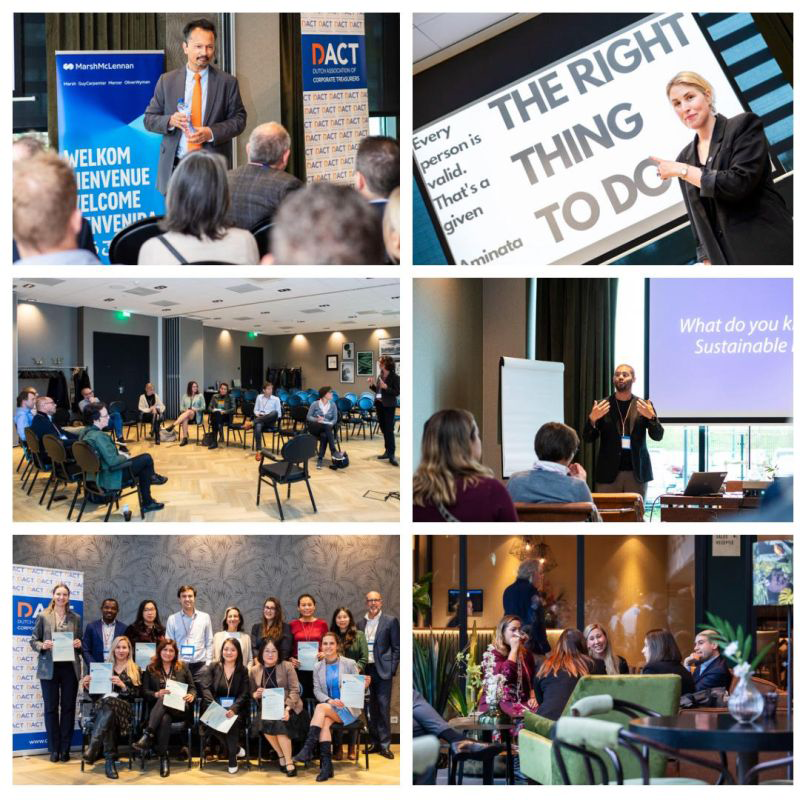

This autumn, DACT hosted three remarkable events!
Each event highlighted different facets of treasury, emphasizing expertise and empowering future leaders and women in finance. These gatherings showcase DACT’s commitment to mentorship and knowledge-sharing, treasury innovation and professional excellence in finance.

In October, DACT's event at EY Amsterdam featured a women-only Personal and Professional Development session. Judith de Bruijn led a session "Colour Model & Charisma", followed by recruiters Josephine van der Vossen-Jonker and Ingrid Reichmann (Partners at Work) discussing reaching C-suite positions, board structures, and achievement showcasing skills. Adding an extra layer of inspiration to the event, was an empowering role model story from Zeynep Deldag, FS Consulting Leader & EMEIA Chief Innovation Officer at EY Netherlands!
Watch this video for an impression: https://youtu.be/yQQj-r9tU8k
In early November, the DACT Academy gathered experts exploring finance, risk management, geopolitics, AI, and innovative strategies. The second edition of this event was an enriching experience, featuring presentations by several academics from renowned universities from the Netherlands and abroad:
The Academy concluded with a celebratory certificate award ceremony, acknowledging the accomplishments of program completers. In summary, DACT Academy 2023 was a symphony of innovation, insights, and connection!
On November 22nd, DACT marked its 27th anniversary uniquely. We gathered 27 aspiring treasurers to present visionary €1 billion bond pitches. Mentored by industry leaders Sander de Vries and Lotte Coppelmans, the event highlighted participants' drive and creativity, shaping a momentous celebration with ambition for the future of treasury.
.png "The LEI: Unlocking the Benefits of a Secure Payments Ecosystem for Corporate Treasurers")
The EACT has been advocating for a digital identity for Corporates for many years now. We believe that, Corporates, like individuals, must have a single identity which help them to identify itself and identify third parties as well in this digital era.
Read.png "LkSG Relevant for Treasury on a Case-by-case Basis")
The Supply Chain Due Diligence Act (LkSG) creates the legal framework to improve the protection of the environment and human rights along German supply chains. GACT spoke to Dr. Julia Sitter (White & Case LLP) about the relevance and need for action by treasury departments.
Read.png "CMU, The Come-Back!")
The Capital Market Union, which was one of the main objectives of the Vander Leyen Commission, is back in the limelight, and is likely to become a priority for the next Commission next summer.
Read.png "What Will be the Corporate Treasurer's Priorities for 2024?")
General insights into the common priorities of corporate treasurers that will still be relevant in 2024.
Read.png "Counterparty Risk Assessment by Treasurers")
François Masquelier lists some comprehensive steps to best assess counterparty risks.
Read